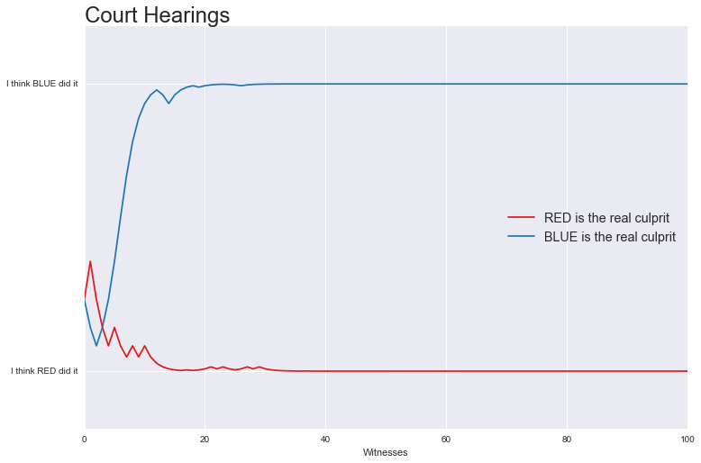

A Primer on Bayesian Statistics (Part 1)
Note
NOTE: This is the first part in a two part series. You can find the second part right here.
A Primer on Bayesian Statistics (Part 1)
Like many people first starting out on their journey into data science, I dove straight into the cool and shiny stuff long before I really knew what I was doing1. It was during this exploratory phase, while I oogled those fancy neural networks, that I began noticing the term Bayesian Statistics with increasing frequency. It popped up in blogs, it popped up in books, it popped up in online videos. "What are they talking about?" I thought, "That one equation I learned about in my intro statistics course? What's the big deal here?"
As I soon found out, I was missing out on a whole school of statistics knowledge and I didn't even know about it! Unfortunately, sources I found on the subject tended to swing either towards textbook-levels of denseness or vague philosophical works about "Dutch Books"2. This is a shame, because I think you can explain the concept in some meaningful depth without writing a whole textbook; all you need is a few visuals and insightful examples.
Reviewing Bayes' Theorem With a Few Visuals and Insightful Examples
Unsurprisingly, I want to start this tutorial by reviewing Bayes' Theorem. The math involved in the theorem isn't especially difficult, but I think many people really miss the point when they first see it. I myself remember learning the formula, thinking to myself "oh, that's cool", and then moving on, leaving the knowledge in a dusty corner of my mind. In order to avoid that in this tutorial, I'll try to be thorough, and build up intuition as much as possible. I'll do this by taking a visual approach and deriving Bayes' Theorem through an example: \(\require{color}\) \(\definecolor{cs}{RGB}{252, 141, 98}\) \(\definecolor{cc}{RGB}{102, 194, 165}\) \(\definecolor{cr}{RGB}{141, 160, 203}\) \(\definecolor{cj}{RGB}{231, 138, 195}\) \(\definecolor{ccr}{RGB}{227, 26, 28}\) \(\definecolor{ccb}{RGB}{31, 120, 180}\) \(\definecolor{ccw}{RGB}{51, 160, 44}\) \(\definecolor{def}{RGB}{93, 93, 93}\)
Weather and Hobbies
As all meteorologists will tell you, there are only three types of weather in the world: sunny, cloudy, and rainy. Here in California, the weather tends to favor long, dry days. As an approximation, let's say that it's sunny \(\color{cs}{60\%}\) of the time, cloudy \(\color{cc}{30\%}\) of the time, and rainy \(\color{cr}{10\%}\) of the time. We can represent this situation quite simply with a visualization:
Now, when I make small talk about the weather, I usually talk about my hobbies as well. I'm a pretty simple guy, so you can segregate my hobbies into two categories: running and everything else. Out of these two groups, I estimate that I go running \(\color{cj}{40\%}\) of all days:
That's an intuitive way to represent probabilities, but it doesn't allow us to compare everything directly. It would be great if we could talk about the weather and our hobbies at the same time. Fortunately, we can! Just combine the scales above into a 2D figure:
Now we can show off both sets of events, just like we wanted. We can see all of the probabilities and even measure them out if we wanted to:
Conditional Probability
Hmmm, something seems off. You see, I actually don't like running when it's too hot outside. While my overall rate is \(\color{cj}{40\%}\), I tend to run less than that if I think I might die of dehydration. Conversely, I also tend to run a lot more on cool, rainy days. The diagram above doesn't show that. See all those right angles? Those are right angles of independence! They imply that, no matter what kind of weather I'm currently experiencing, I will always have a \(\color{cj}40\%\) running rate. Me running and the weather don't affect one another.
We can visually prove this by looking at the conditional probabilities of each event. For example, say it's a sunny day and we want to know the probability of me going for a jog. In mathematical notation, we're looking for the quantity \(\boldsymbol{P}(\color{cj}running\color{def}\,|\,\color{cs}sunny\color{def})\). We can find it like this:
This image shows how I like to think about conditional probability. When we assumed that it was a sunny day, we essentially said that we must land in the \(\img[-0.25em][1em][1em]{images/ss.svg}\) area (you are here). To see how likely it is that I go running in sunny weather, we then look for how likely it is that we land in the \(\img[-0.25em][1em][1em]{images/sj.svg}\) area, knowing that we have to stay in the \(\img[-0.25em][1em][1em]{images/ss.svg}\) area. Thus, the probability of me running given that it's sunny, \(\boldsymbol{P}(\color{cj}running\color{def}\,|\,\color{cs}sunny\color{def})\), is the area of the intersection \(\img[-0.25em][1em][1em]{images/sjs.svg}\) compared to the \(\img[-0.25em][1em][1em]{images/ss.svg}\) area. Notice that this is still \(40\%\)! Thus, \(\boldsymbol{P}(\color{cj}running\color{def}\,|\,\color{cs}sunny\color{def}) = \boldsymbol{P}(\color{cj}running\color{def})\) and we have independence.
We can go a step further, take what I said above, and make it concrete with a formula:
To anyone who's taken a statistics course, this is the all-too-familiar formula for conditional probability, derived using a purely visual method! It's usually presented with arbitrary events \(A\) and \(B\) in a somewhat bland way:
Now that we've established independence between running and all the weather events, how can we go about changing that? Well, we just have to get rid of the right angles:
Look at how the probability of running shifted away from sunny towards cloudy and rainy (the dotted line is the old boundary). The events now work out in a way that reflects my preferences:
Bayes' Theorem
Bad luck, it seems you've suddenly developed an acute case of can't-tell-the-weather-itus. It's an extremely rare disease that temporarily removes your ability to detect the weather (strangely, it doesn't affect your life in any other way). Just as this happens, you spot me jogging across the street. Aha! A way out of this predicament! You've read this post, so you know that I'm more likely to be running if it's raining or cloudy. The chances of rainy or cloudy weather must be high!
No wait, that's wrong. You only know how the weather affects my tendency to run, not the other way around. In other words, you might know \(\boldsymbol{P}(\color{cj}running\color{def}\,|\,\color{cr}rainy\color{def})\) but you do not know \(\boldsymbol{P}(\color{cr}rainy\color{def}\,|\,\color{cj}running\color{def})\), and these two values are not necessarily equal. Visually:
If we're looking for \(\boldsymbol{P}(\color{cr}rainy\color{def}\,|\,\color{cj}running\color{def})\), we want to know how likely it is that we land in \(\img[-0.25em][1em][1em]{images/sr.svg}\) assuming we're already in \(\img[-0.25em][1em][1em]{images/sj.svg}\); just looking at the diagram, you can surmise that this is a small number, especially when compared to \(\boldsymbol{P}(\color{cj}running\color{def}\,|\,\color{cr}rainy\color{def}) = 0.58\) (how likely we are to land in \(\img[-0.25em][1em][1em]{images/sj.svg}\) assuming we're inside \(\img[-0.25em][1em][1em]{images/sr.svg}\)). The discrepancy stems from that fact that, in California, the base rate of rain starts low, \(\boldsymbol{P}(\color{cr}rainy\color{def}) = 0.10\). If you want to get the correct prediction, you have to approach this from a different angle.
Good thing we learned about conditional probability in the last section! Just like last time, we can find \(\boldsymbol{P}(\color{cr}rainy\color{def}\,|\,\color{cj}running\color{def})\) as follows:
The only problem here is that we don't know the numerical value of the \(\img[-0.25em][1em][1em]{images/sjr.svg}\) area, the intersection \(\boldsymbol{P}(\color{cr}rainy\color{def},\,\color{cj}running\color{def})\). We can fix this by applying conditional probability in the other direction, basically switching the roles of running and rainy:
Finally, we substitute and get our answer:
Or, in case you prefer to do all your math using colorful squares3:
This formula is known as Bayes' Theorem. The most immediate result of Bayes' Theorem is that it allows you to flip conditional probabilities:
In our case, for example, it allows us to solve the big problem you were having just a little while ago:
Similarly, we can use this method to find the other probabilities as well:
Predicament solved! Even though I prefer rain to sun when jogging, the fact that California has mostly sunny weather beats out my preferences. If you see me out for a jog, I'm probably dehydrated (I should start working out with a water bottle).
A Different Way to Think About Bayes
The ability to switch conditional probabilities sounds useful, but how can you create a whole school of thought based around it? How can people write whole textbooks on the subject? How come this tutorial is only half over? Well, the real power of Bayes' Theorem doesn't lie in it's ability to switch conditional probabilities, and I wouldn't want you to come away from this tutorial thinking that. Instead, statisticians view Bayes' Theorem like so:
This view of Bayes' Theorem says you can combine the base rate of an event (the prior) and modify it with new information to get a better estimate of the same event (the posterior). In the picture above, you start with base knowledge about the probability of rain. If you don't have any other information, you can only rely on the this base rate, so \(\boldsymbol{P}(\color{cr}rainy\color{def}) = 0.10\). However, once you get a piece of data (whether I'm running that day or not), Bayes' Theorem says that you integrate this information into a new estimate and get a posterior probability. In this case, you find that \(\boldsymbol{P}(\color{cr}rainy\color{def}\,|\,\color{cj}running\color{def}) = 0.145\).
The modifying term compares the likelihood of me running in rainy weather (the numerator) to the flat chance of me running in any weather (the denominator). These two terms have names, the likelihood and the evidence4:
In effect, the likelihood and the evidence measure how much information we get out of the data. If the modifier ends up greater than \(1\), our posterior probability ends up higher than our prior. The same is true in the other direction; if the modifier is less than \(1\), the posterior probability will be lower than the prior. For example:
Since you know that I prefer rainy weather when working out, your estimate of rain goes up from the base rate if you see me running. Similarly, your estimate on the chances of sunny weather go down. Why is this so useful? Because now, we have a way to incorporate data into initial estimates and refine them! Isn't that exciting!
What's that? You still don't see what the big deal is? Maybe we need another example.
A New Example and a Change of Colors
To appreciate the power of incorporating data into estimates, let's change gears and work through a new, more serious, example.
Consider a city with two competing cab companies: the red and blue company. The red company dominates the market with \(\color{ccr}75\%\) of cabs in the city, leaving \(\color{ccb}25\%\) to the blue company. One day, a hit-and-run occurs. Local camera footage manages to see that a cab driver was the perpetrator. Unfortunately, the camera did not catch the logo on the cab, the only distinguishing feature between the two companies. Because of your vast statistics knowledge, you've been chosen to act as a judge on this case. Which company do you believe should be fined5? Most likely, guilt lies with the red company, simply due to chance:
This sets up our prior. Right now, we only know the following:
Of course, the story doesn't end there. Not wanting to pay hefty fees, the red company produces a witness that says he saw the blue company logo. You check the camera footage and notice that this witness was indeed nearby when the crime happened. The blue company, aware that eyewitnesses can be unreliable, proposes a test to see if the witness can correctly differentiate company logos when a cab drives past him. The witness takes the test and, much to the red companies' chagrin, it's found he can only identify the correct logo \(\color{ccw}60\%\) of the time.
Ok judge, which company do you suspect now? Well, let's look at the data we just got:
The testimony represents a single data point that we can use to modify the base rate of either \(\boldsymbol{P}(\color{ccb}blue\color{def})\) or \(\boldsymbol{P}(\color{ccr}red\color{def})\). Looking at the probability space can give us some good intuition about the case:
Since the witness testified against the blue company, we know we're in the striped region. Just looking at the picture, the red company remains the most likely suspect: the area of the lower-right striped region (culprit was red and the witness is wrong) looks larger than the upper-left striped region (culprit was blue and witness is right).
Of course, we need to test this out rigorously. Let's try to find the posterior probability for blue (we could have also chosen to calculate the posterior for red, I just made a random choice). To find \(\boldsymbol{P}(\color{ccb}blue\color{def} \,|\, \color{ccw}witness\color{def} \text{ says } \color{ccb}blue\color{def})\) we use Bayes' Theorem:
The only term that we don't immediately know here is the evidence, the probability that the witness says blue. However, we can easily figure this out, we just need to consider all the situations that can lead to the witness saying blue. There are two, each represented by one of the striped regions in the probability space:
We arrive at a pretty expected answer:
So, even with the testimony, we find that most guilt still lies with the red company. The chances of the culprit being blue are only \(1\) in \(3\).
But wait, just as you're about to pass your judgment, someone bursts into the courtroom6. It's a second witness, who also says he saw a blue logo. And behind him? There's a third witness, and a fourth, and a fifth, ...
Each witness has their own story, ready to supply evidence for either the red or blue company. They all took the test and each of them also got a \(\color{ccw}60\%\) (really blurry logos)7. If running out of the courtroom while screaming is not an option, how can you handle this situation? Will Bayes' Theorem stop working now that we have multiple data points? Of course not! For example, if we have two witnesses and both say they saw blue, we could calculate:
Here, I used a shorthand \(\color{ccb}blue\color{def} \leftrightarrow \color{ccb}b\color{def}\) and \(\color{ccw}witness\color{def} \leftrightarrow \color{ccw}w\color{def}\) to save space. So clearly, Bayes' Theorem can handle any amount of data, we simply treat the two (or potentially more) data points as one event. To make this even more clear, we can rewrite our data \((\color{ccw}w_1\color{def} \text{ says } \color{ccb}b\color{def}, \color{ccw}w_2\color{def} \text{ says } \color{ccb}b\color{def})\) as an ambiguous \(\color{ccw}d\color{def}\):
Unfortunately, I won't be able to draw probability spaces (like the ones I drew above) to explain the actual calculations that go on here. This stems from the fact that, to keep each data point independent, we would need to move from 2D into 3D, 4D, 5D, etc. We can, however, demonstrate the power of this approach by generating actual samples. Take a look at the following graph, which shows the outcome of using Bayes' Theorem with a LOT of witnesses:
I randomly generated the blue line above by assuming that blue was the real culprit. This would mean that \(60\%\) of the witnesses would testify against blue, so that if we have \(10\) of them, \(6\) (on average) would say they saw a blue logo. I randomly generated the red line by assuming the opposite: the red company was the culprit. This means that \(60\%\) of the witnesses testified against the red company. The y-axis represents our posterior in every case.
Looking at the graph, it seems that within \(\color{ccw}20\) witnesses, we had about \(99\%\) confidence we knew the true culprit. This number would have been lower if each witness could identify the logos at a better rate than \(\color{ccw}60\%\)8.
Notice also, that our data eventually overrode the prior. Even though we initially believed that red was the culprit in both cases (the prior), we always end up believing in the correct outcome once we got enough information. This is an important aspect of the Bayesian approach that I hope to flesh out later: priors can skew posteriors when we have low amounts of data, but the posterior always converges to the same answer.
Moving Onto the Harder Stuff
If you care about using data to try and tease out answers, hopefully you see how fundamental Bayes' Theorem is. You can take initially available information, encode it in a prior, and modify it through data. But how is this different than what statisticians have been doing for decades using classical estimators and p-values? And what if we don't know what prior to pick? Are we out of luck?
Discovering the connections between Bayes and the Frequentist (classical) approach and developing those consequences takes a bit more mathematical know-how than what I've used so far. If you're curious and feel up to the task, read on to Part 2.
Resources
Textbooks
The credit for a lot of the examples in this post doesn't belong to me. I took several examples on this page from two sources:
- David MacKay's book Information Theory, Inference, and Learning Algorithms. Both the textbook and the lectures associated with them are free and available online with a simple search. Links for the lazy: book and lectures.
- Andrew Gelman's book Bayesian Data Analysis. Not only is this text well written, it also contains great one-lines like9:
- "As you know from teaching introductory statistics, 30 is infinity."
- "Why is it Normal? Because that’s the only continuous multivariate distribution we have. Oh, we have the multivariate \(t\) ... as if that’s a different distribution.”
Footnotes
| [1] | Disclaimer: I still don't. I'm active learning about this topic as I write. Please don't hesitate to tell me about anything that seems wrong. |
| [2] | Not that there's anything wrong with textbooks of philosophical works. If you're looking for the former, check out the two books I mention right above these footnotes. If you're looking for the latter, try some Bayesian Epistemology. |
| [3] | I don't know about you, but I was personally surprised by this version of Bayes' Theorem. You're just canceling out areas! |
| [4] | Yes, this is the exact same likelihood function that you use when constructing a maximum likelihood estimate (MLE). In fact, Bayes essentially becomes maximum likelihood under certain conditions! Here's a good Stack Overflow post about it. |
| [5] | If this were a real case, the legal system would obviously not work like this. This is just an example. |
| [6] | Again, not how real courtrooms work. Pretend this is a TV drama. |
| [7] | What I'm doing here is setting up a set of independent and identically distributed samples; the bread and butter of pretty much all statistical inference. |
| [8] | Luckily, it wasn't \(50\%\)! I leave it as an exercise for you to imagine what would happen in that case. Hint, do the calculation for one data point assuming a \(50\%\) reliable witness. |
| [9] | For more great statistics lines (and you know you want more) see this page of 77 best Gelman quotes. |